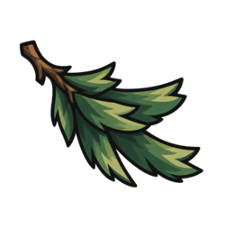
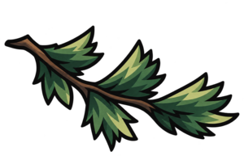
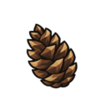
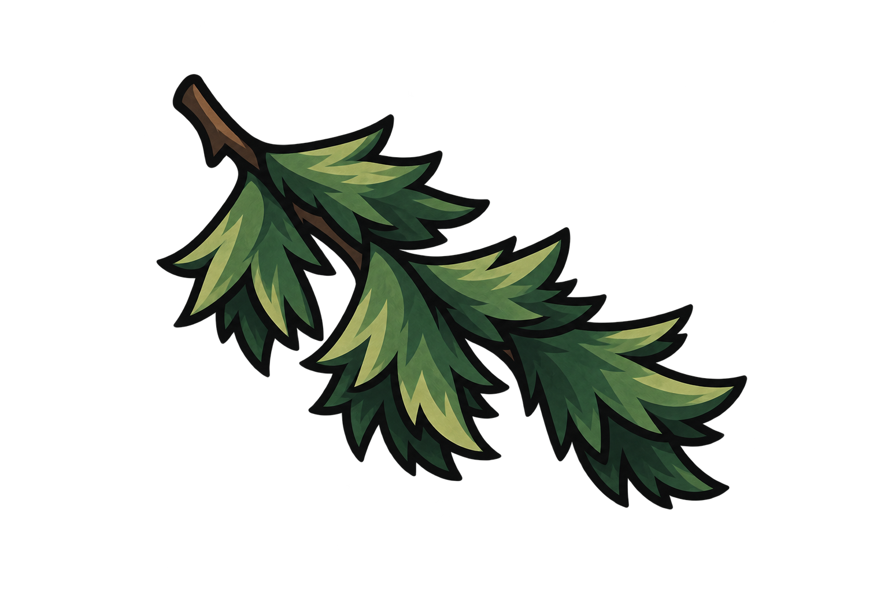
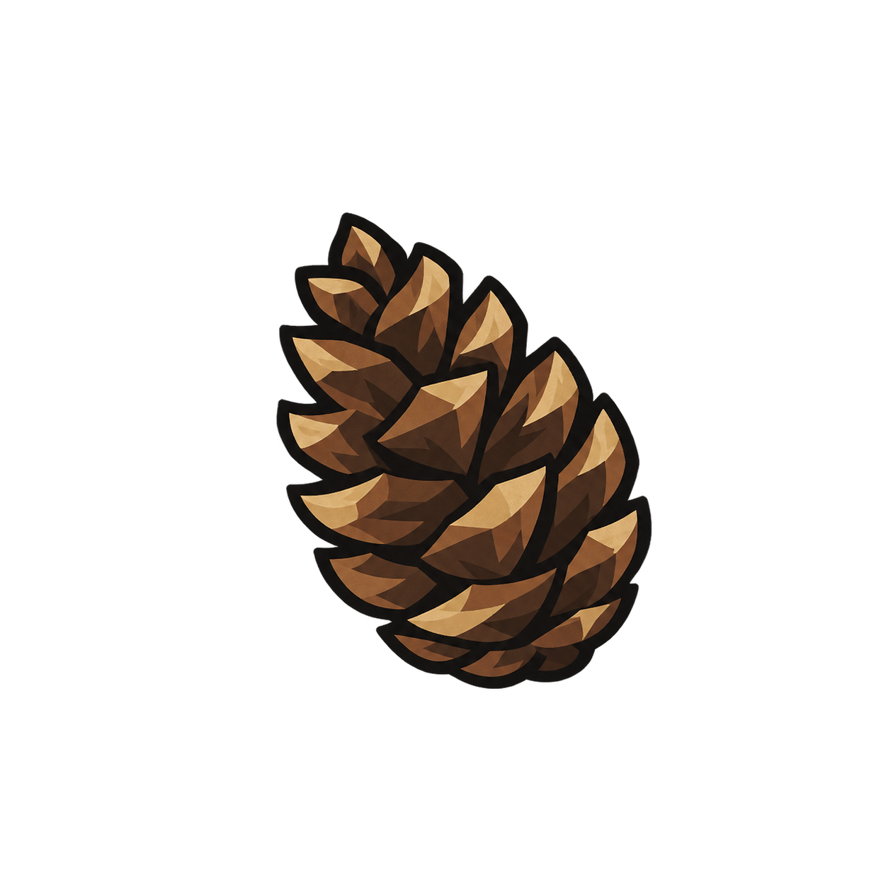
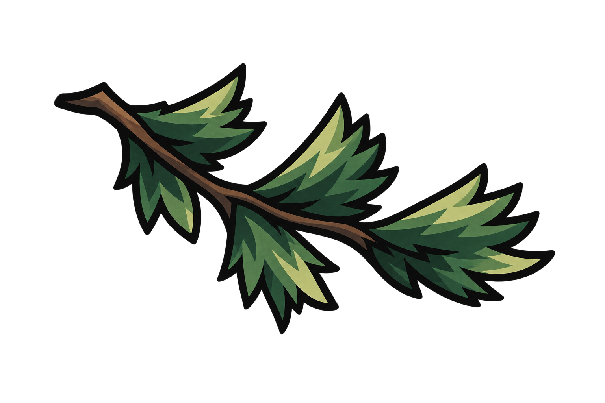
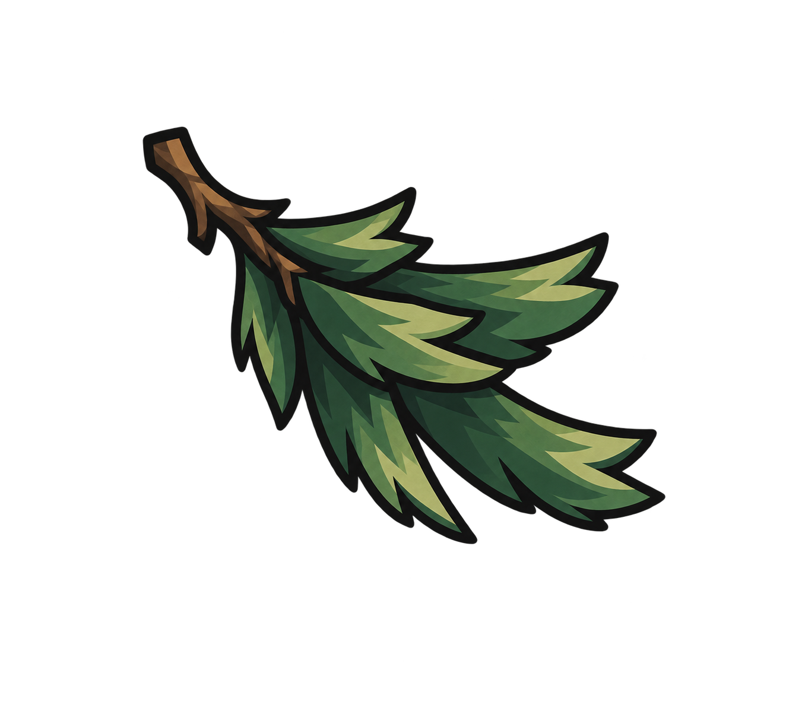

[ INDEX ]
[ PERSONAL SPACE / 2026 ]
THE XILLIX
[ INDEX ]
--:--:--[ NAVIGATION ]
ЛИЧНОЕ ПРОСТРАНСТВО
БЕЗ ЛИШНЕГО ШУМА.







Хвойный культ
это
свежий взгляд на жизнь
Мы не поклоняемся хвое.
Она просто напоминает нам, какой должна быть жизнь:
свежей, насыщенной, сильной и настоящей.
Хвойный культ — это способ вытащить себя из автопилота и начать жить полной собственной жизнью.
Жизнь не обязана быть бесконечной гонкой, но свободное время не должно превращаться в просмотр чужих жизней в социальных сетях и бесконечный поток быстрого дофамина.
Вместо очередного часа в ленте можно погулять в новом месте, заняться спортом, почитать интересные книги, начать учить английский, запустить свой проект, навести порядок дома, наконец-то сделать то, что ты всегда откладывал.
Страх начать, ошибиться, показаться глупым, написать первым, запустить бизнес, выйти в новое место или заняться тем, о чём давно мечтал.
Страх часто притворяется ленью, усталостью или фразой: «Начну завтра».
Но стоит сделать первый шаг — и мозг понимает, что опасности не было.
Вступить в Хвойный культ очень просто.
Ты не обязан быть лучше всех,
но ты обязан оставаться прежним.
Если не ты — то кто-то другой.
Если не сейчас — то никогда.
Выйди из ленты и сделай первый шаг прямо сейчас.